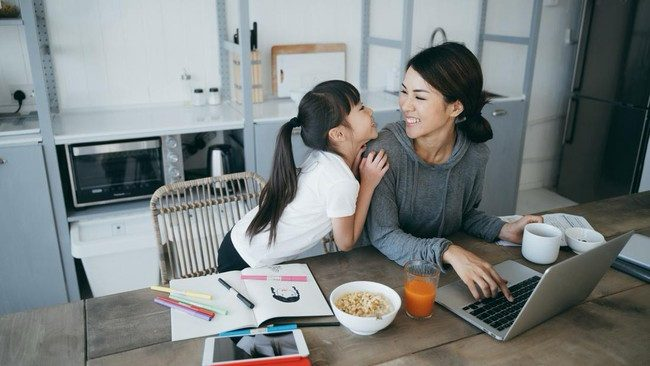

Ketika Waktu Menjadi Kemewahan: Perjuangan Orang Tua di Tengah Kesibukan

BANDUNG — Di antara tuntutan pekerjaan dan tanggung jawab rumah tangga, seorang ibu belajar bahwa kebersamaan dengan anak tidak selalu diukur dari lamanya waktu, tetapi juga dari perhatian yang diberikan.
Bagi Wulan Andriani, 32 tahun, hari sering kali dimulai sebelum kesibukan benar-benar terasa. Sebelum berangkat bekerja, ia harus menyiapkan kebutuhan dirinya sendiri, anak, suami, hingga keperluan rumah tangga. Setelah menyelesaikan tanggung jawabnya di tempat kerja, masih ada peran lain yang menunggunya ketika sampai di rumah: menjadi seorang ibu bagi kedua anaknya, ringkasnya saat diwawancarai pada Sabtu, 17/10/2026.
Rutinitas tersebut menjadi bagian dari kesehariannya. Di tempat kerja, Wulan berusaha menjalankan tanggung jawab profesional dengan baik. Namun, di tengah pekerjaannya, pikirannya terkadang tetap tertuju kepada anak-anaknya. Ia memikirkan apakah mereka sudah makan, bagaimana keadaan mereka, atau apakah mereka sedang mencarinya.
Ketika pekerjaan selesai, tanggung jawabnya tidak serta-merta berakhir. Ada kebutuhan anak yang harus diperhatikan, pekerjaan rumah yang perlu diselesaikan, serta keinginan untuk menikmati waktu bersama keluarga.
“Memang tidak selalu mudah, tetapi saya belajar bahwa menjalani semuanya tidak harus sempurna setiap hari. Yang penting, saya terus berusaha hadir dan memberikan yang terbaik sesuai kemampuan saya,” ujar Wulan.
Bagi Wulan, menjalani peran sebagai ibu sekaligus pekerja bukan sekadar persoalan membagi waktu. Ada tenaga, perhatian, dan emosi yang harus dikelola agar keduanya tetap berjalan.
Di Antara Lelah dan Tanggung Jawab
Menjadi ibu pekerja berarti menghadapi dua tanggung jawab yang sama-sama membutuhkan perhatian. Di tempat kerja, Wulan dituntut untuk profesional. Sementara di rumah, ia ingin menjadi sosok ibu yang sabar, penuh perhatian, dan memiliki waktu untuk anak-anaknya.
Tidak setiap hari berjalan sesuai harapan. Ada kalanya pekerjaan sedang menumpuk ketika anak justru membutuhkan perhatian lebih. Ada pula saat tubuh terasa lelah setelah bekerja, tetapi anak masih ingin bermain atau bercerita.
“Menurut saya, tantangan terbesarnya bukan sekadar membagi waktu, tetapi membagi energi dan perhatian,” ungkapnya.
Situasi tersebut terkadang membuat Wulan merasa serba salah. Ketika fokus menyelesaikan pekerjaan, waktu bersama anak terasa berkurang. Sebaliknya, ketika ingin menghabiskan lebih banyak waktu bersama mereka, ada tanggung jawab pekerjaan yang tetap harus dituntaskan.
Meski demikian, Wulan mulai memahami bahwa keseimbangan tidak selalu berarti semua hal harus mendapatkan porsi waktu yang sama setiap hari. Ada hari ketika pekerjaan lebih menyita perhatian, sementara pada kesempatan lain ia dapat lebih leluasa bersama keluarga.
Ia juga menyadari bahwa menjadi ibu tidak berarti harus selalu kuat dan mampu melakukan semuanya sendiri. Rasa lelah merupakan hal yang manusiawi, begitu pula kebutuhan untuk beristirahat.
“Ibu yang baik bukanlah ibu yang tidak pernah lelah, melainkan ibu yang terus belajar merawat anak sekaligus menjaga dirinya sendiri,” tuturnya.
Bagi Wulan, menerima keterbatasan menjadi bagian dari proses belajar menjalani peran sebagai ibu. Ia berusaha tetap memenuhi tanggung jawabnya tanpa mengabaikan kebutuhan dirinya sendiri.
Menemukan Arti Kehadiran dalam Hal-Hal Sederhana
Di tengah kesibukannya, Wulan berusaha menjaga kedekatan dengan anak melalui kebiasaan-kebiasaan kecil. Ia menyempatkan diri memeluk anak sebelum berangkat bekerja, mencium keningnya, menanyakan kabar, dan mendengarkan cerita mereka.
Setelah pulang kerja, ia juga berusaha menyediakan waktu untuk menyapa dan memeluk anak. Jika memungkinkan, mereka menghabiskan waktu dengan bermain, makan bersama, atau membaca cerita. Baginya, momen kepulangan bukan sekadar rutinitas, melainkan kesempatan untuk kembali membangun kedekatan setelah seharian menjalani aktivitas masing-masing.
“Saya ingin momen kepulangan itu menjadi sesuatu yang hangat bagi kami, bukan sekadar rutinitas datang ke rumah,” katanya.
Kebiasaan tersebut mungkin terlihat sederhana. Namun, bagi Wulan, perhatian kecil bisa menjadi cara untuk menunjukkan bahwa anak tetap memiliki tempat penting dalam hidupnya.
Pandangan ini sejalan dengan kerangka Nurturing Care yang dikembangkan Organisasi Kesehatan Dunia (WHO) bersama UNICEF dan sejumlah mitra. Kerangka tersebut menekankan bahwa tumbuh kembang anak tidak hanya membutuhkan kesehatan dan nutrisi yang memadai, tetapi juga rasa aman, kesempatan belajar, serta pengasuhan yang responsif terhadap kebutuhan anak. Interaksi yang hangat antara anak dan pengasuh menjadi salah satu bagian penting dalam proses tersebut.
Bagi Wulan, kebersamaan tidak selalu harus diwujudkan melalui kegiatan besar atau waktu yang panjang. Mendengarkan cerita anak, menemani mereka bermain sebentar, atau memberikan pelukan setelah pulang kerja dapat menjadi momen yang berarti. Ia mengingat bagaimana anak-anaknya terkadang berlari menyambut ketika dirinya pulang, memeluknya tanpa alasan, atau mengajaknya bermain meskipun ia baru saja menyelesaikan pekerjaan.
Momen-momen seperti itu membuatnya menyadari bahwa masa kecil anak terus berjalan, sementara kesempatan untuk menikmati setiap tahap pertumbuhannya tidak akan selalu sama.
“Mungkin bagi orang dewasa, bermain beberapa menit atau mendengarkan cerita yang sama berkali-kali adalah hal biasa. Tetapi bagi anak, bisa jadi itulah momen yang membuatnya merasa dekat dan dicintai,” ungkap Wulan.
Dari pengalaman tersebut, ia belajar untuk sesekali berhenti dari kesibukan dan memberikan perhatian penuh kepada anak. Bukan berarti pekerjaan rumah harus ditinggalkan atau rasa lelah diabaikan, melainkan berusaha menemukan ruang untuk menikmati kebersamaan di tengah berbagai tanggung jawab.
Bekerja untuk Masa Depan, Hadir untuk Hari Ini
Bagi Wulan, bekerja merupakan bagian dari tanggung jawabnya terhadap keluarga. Ia ingin membantu memenuhi kebutuhan anak-anaknya sekaligus mempersiapkan masa depan yang lebih baik. Namun, ia juga menyadari bahwa masa depan bukan satu-satunya hal yang perlu diperjuangkan. Ada masa kini yang juga perlu dinikmati bersama anak.
Sebagai ibu pekerja, Wulan tidak selalu bisa berada di sisi anak setiap saat. Ada momen yang mungkin terlewat karena pekerjaan, ada waktu bermain yang harus dipersingkat, dan ada hari-hari ketika kelelahan membuatnya perlu beristirahat lebih dahulu.
Meski begitu, ia tidak ingin keterbatasan waktu membuat anak merasa kehilangan kedekatan dengannya. Ia berusaha memastikan bahwa ketika mereka bersama, anak-anaknya mendapatkan perhatian dan kesempatan untuk menyampaikan apa yang mereka rasakan.
Menurut Wulan, kehadiran orang tua tidak hanya berarti menyediakan makanan, pakaian, pendidikan, dan kebutuhan sehari-hari. Anak juga membutuhkan seseorang yang bersedia mendengarkan, memberikan rasa aman, serta menerima perasaannya.
“Anak tidak hanya membutuhkan masa depan yang kita persiapkan untuknya, tetapi juga membutuhkan kenangan bersama kita selama ia tumbuh,” tuturnya.
Pesan tersebut menjadi pengingat bagi Wulan bahwa menjalani peran sebagai ibu pekerja bukan berarti harus selalu memilih antara karier dan anak. Keduanya merupakan bagian dari kehidupannya yang perlu dijalani dengan kesadaran akan keterbatasan dan kemampuan diri.
Ia juga berharap para orang tua lain tidak terlalu keras kepada diri sendiri ketika merasa belum mampu membagi waktu secara ideal. Setiap keluarga memiliki keadaan dan tantangannya masing-masing. Karena itu, membandingkan perjalanan pengasuhan dengan keluarga lain bukanlah satu-satunya cara untuk menilai keberhasilan sebagai orang tua.
Bagi Wulan, hal yang terpenting adalah terus berusaha, memanfaatkan waktu yang tersedia, meminta bantuan ketika diperlukan, dan tetap menjaga kesehatan diri sendiri.
Pada akhirnya, waktu menjadi berharga bukan semata-mata karena jumlahnya terbatas, melainkan karena ada hubungan yang ingin dijaga di dalamnya. Di antara pekerjaan yang harus diselesaikan dan urusan rumah tangga yang menunggu, Wulan berusaha menemukan ruang untuk hadir bagi kedua anaknya.
Sebab, pekerjaan mungkin masih bisa dilanjutkan esok hari, tetapi masa ketika anak-anak tumbuh kecil akan terus berlalu. Dan di tengah waktu yang tidak bisa diputar kembali itu, perhatian sederhana hari ini dapat menjadi bagian dari kenangan yang mereka bawa hingga dewasa.
Oleh: Nova Ayu Elysia
Daftar Pustaka
World Health Organization. (2018, 18 Mei). Nurturing care for early childhood development: A framework for helping children survive and thrive to transform human potential. who.int
World Health Organization. (2020, 5 Maret). Improving early childhood development: WHO guideline. who.int
Wawancara dengan Wulan Andriani, 32 tahun, ibu dari dua anak. Data wawancara diberikan oleh penulis untuk artikel PARENT SPACE, 17/10/2026.